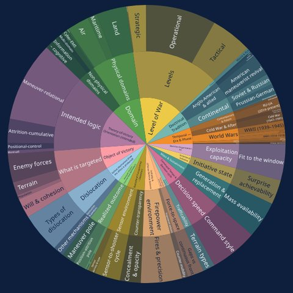
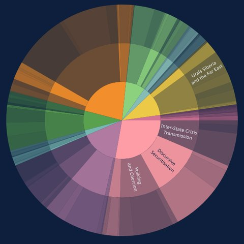
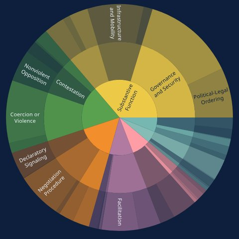
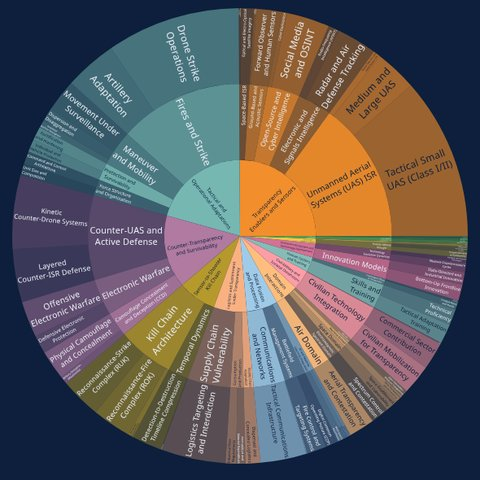
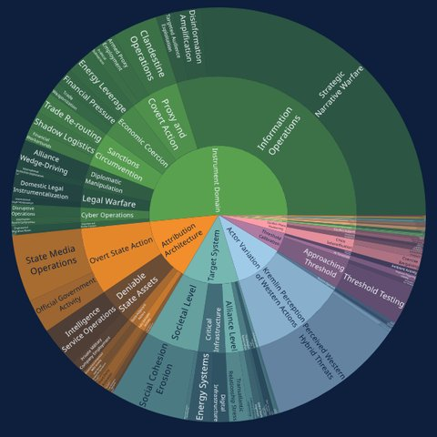
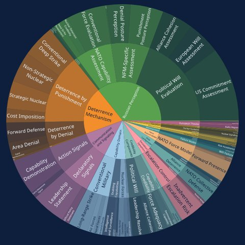
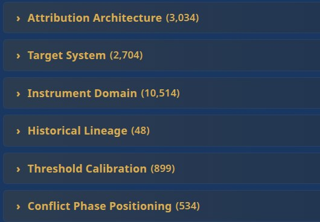

AIRA – taxonomie: bepalen wat je kunt zien
AIRA-training · Den Haag · woensdag 14 oktober 2026 · 09:00–10:30
Stephan De Spiegeleire · Principal Scientist, HCSS
Jullie drie thema’s en datasets
Transparent Battlefield
“Hoe beïnvloedt vergroot situationeel bewustzijn de moderne oorlogsvoering?”
HCSS-rapport: From the Fog of War to the Fever of Exposure (maart 2026)
tb_100 / _1000 / _100001001.00010.000fragmenten
Grey-Zone Warfare
“Hoe opereert Rusland in het grijze gebied tussen vrede en oorlog?”
HCSS-rapport: The Grey Horizon (januari 2026)
grey_zone_100 / _1000 / _100001001.0008.052fragmenten
Effective Deterrence
“Welke elementen maken afschrikking geloofwaardig en effectief tegenover Rusland?”
HCSS-rapport: The Glass Wall (januari 2026)
deterrence_100 / _1000 / _100001001.0007.287fragmenten
De sessie in 90 minuten
Een taxonomie bepaalt wat je analyse kan vinden, tellen en vergelijken.
1Zoeken op het themawoord mist het meeste
2Elke vergelijking is ad hoc
Effective Deterrence Peskov: “de nucleaire doctrine is van kracht”. Poetin: “tegen de Tomahawks: sterkere luchtverdediging”. Zelfde soort signaal?
3Elk rapport bedenkt zijn categorieën opnieuw
Grey-Zone Warfare De FSB-zaak tegen een inwoner van Tomsk die militaire objecten fotografeerde: in het ene rapport ‘spionage’, in het volgende ‘sabotage’?
1Filteren op betekenisпрозрачн*: niet in de tekst
«…Корректировка огня и контроль поражения цели осуществлялись в режиме реального времени операторами БПЛА.»
“Vuurcorrectie en controle van het resultaat gebeurden in realtime door de drone-operators.”
Transparantiefactor › Sensorsystemen › Luchtverkenning › FPV‑drones
2Tellen
Grey-Zone Warfare Melden Russische bronnen tussen 2022 en 2026 vaker FSB-zaken tegen ‘Oekraïense diensten’? (grey_zone_10000, 8.052 fragmenten)
3Vergelijken
Effective Deterrence Spreken Telegram-experts vaker over bestraffing, en officiële bronnen vaker over ontzegging? (deterrence_1000)
Leg het object en het kader vast vóór je de data opent, voor elk van de drie thema’s.
Het principe · uit ADA (Bakoe, sept. 2026)
Leg eerst het object vast
Het primaire object is de eenheid die elk label beschrijft. Bij ADA: de relatie tussen Armenië en Azerbeidzjan sinds 1991, niet de publicaties.
Deductief: het corpus kan v0 toetsen of falsifiëren, maar niet genereren.
Transparent Battlefield
“Hoe beïnvloedt vergroot situationeel bewustzijn de moderne oorlogsvoering?”
Primair object
een Russische uitspraak over zichtbaarheid op het slagveld en wat die betekent voor de strijd
Buiten scope
techniek zonder iets over zien of gezien worden; ruis zoals het jubileum van SOBR ‘Mangoest’ (tb_100, niet relevant)
Grey-Zone Warfare
“Hoe opereert Rusland in het grijze gebied tussen vrede en oorlog?”
Primair object
een beschreven of geclaimde Russische (of aan Rusland toegeschreven) handeling onder de drempel van open oorlog, zoals Russische bronnen die framen
Buiten scope en grensgeval
gevechten aan het front. Grens: F‑GZ2, een Oekraïense sabotage bij Novorossiejsk in open oorlog. Erin of eruit?
Effective Deterrence
“Welke elementen maken afschrikking geloofwaardig en effectief tegenover Rusland?”
Primair object
een Russische inschatting van, of signaal over, afschrikking tussen Rusland en het Westen
Kies de richting
De vraag: afschrikking tegenover Rusland. F‑DET1 (Peskov: “de nucleaire doctrine is van kracht”) is het omgekeerde. Buiten: zonder Rusland.
Domain for this run: {{DOMAIN}}
MDTDF.md, ‘Instructions for Use’, stap 1“1. Define Your Domain: Clearly specify what you are creating a taxonomy for”
één objectéén perspectieféén grens
de prompt (MDTDF.md)
Eén relatie, nevencategorieën die nooit overlappen, vier niveaus van dimensie tot label.
Transparent Battlefield: één bericht uit tb_1000, gecodeerd op alle zes dimensies van de HCSS-taxonomie.
MDTDF doet hetzelfde: “consider a community policing patrol analyzed through multiple HLTPs”: zeven lenzen.
Beslis vóór het annoteren: mag een dimensie meer dan één label krijgen? Bij Effect passen er hier twee. Leg het vast, anders tellen annotatoren verschillend.
Houd twee dimensies alleen als elke combinatie ervan in echte fragmenten voorkomt.
De generatieprompt die HCSS gebruikt, letterlijk geciteerd: wat hij het model laat doen, en in welk formaat.
Multi-Dimensional Taxonomy Development Framework (MDTDF)
Stephan De Spiegeleire, HCSS · Jun 4, 2025 (Enhanced Edition)
StratBase/MDTDF.md · sha256 f0e7fadd…788bc04c
Bronbestand, ook gebruikt in het ADA-deck (Bakoe, 21 september 2026); ook als bestand op het onderwijsplatform
Wat het model bouwt: vier niveaus
Hoe elke dimensie wordt getoetst
Begin with 5-7 clearly independent dimensions
Wat het model oplevert: een TSV-tabel · THEMA: TRANSPARENT BATTLEFIELD, drie echte rijen uit de HCSS-taxonomie
| HLTP | 2nd Level TE | 3rd Level TE | Taxon |
|---|---|---|---|
| Transparency Driver | Sensor Systems | Aerial ISR | Tactical UAVs / FPV drones |
| Transparency Driver | Sensor Systems | Space-based ISR | Commercial satellite imagery |
| Battlefield Effect | Tactical effects | Survivability degradation | Concealment/camouflage failure |
Aim for 8-15 concrete taxa for each 3rd Level element
Please produce a complete taxonomy following this exact structure, with no deviations in format.
De vijf valkuilen die de MDTDF-prompt zelf noemt, elk getoond op een van jullie drie thema’s.
Creating dimensions that are actually different aspects of the same thing
THEMA: GREY-ZONE WARFARE
Conflict Phase Positioning naast Threshold Calibration: kandidaat, niet gemeten.
Developing overly complex frameworks that are difficult to use
THEMA: ALLE DRIE
Aantal HLTP’s, geteld in de HCSS-bestanden: TB 6, Grey Zone 13, Deterrence 14.
Prioritizing theoretical elegance over practical utility
THEMA: EFFECTIVE DETERRENCE
Theoretical Framework → Deterrence Theory → Classical / Contemporary / Russian Strategic Thought.
Treating the taxonomy as fixed rather than evolving
THEMA: JULLIE EIGEN TAXONOMIE
v1 gaat vanmiddag de annotatie in; de validatie van 50 fragmenten op donderdag kan een v2 afdwingen.
Focusing exclusively on familiar or comfortable dimensions
THEMA: EFFECTIVE DETERRENCE
De HCSS-taxonomie heeft zelf een 3e niveau Russian Strategic Thought.
Drie manieren om te bouwen, waarom geen van beide partijen alleen bouwt, en hoe de drie rondes van vanochtend in elkaar grijpen.
Bottom-up
Lees fragmenten, groepeer wat je ziet.
bv. 50 fragmenten uit grey_zone_1000 thema Grey-Zone
+ past bij de data – vertekend
Top-down
Begin bij een raamwerk: doctrine, theorie.
bv. ontzegging ↔ bestraffing uit de afschrikkingstheorie thema Deterrence
+ samenhangend – mist de praktijk
Hybride
Het raamwerk geeft de structuur, de data vullen het detail in.
bv. dimensies uit de literatuur, verfijnd op tb_1000 thema Transparent Battlefield
+ evenwichtig – meer werk
Alleen het model
Het model kiest de kopjes: snel en fris, maar de belangrijkste analytische beslissing is uitbesteed.
Alleen de analisten
Drie experts, drie structuren, op dezelfde aannames: dezelfde opleiding, dezelfde westerse canon (Schelling), dezelfde blinde vlekken.
⚠ Stockholmsyndroom: na twee rondes schaaft het model alleen nog bij. Dwing een andere lens of een ander model af.
⚠ Geen realiteitstoets: lees elke ronde 5–10 echte fragmenten uit je eigen dataset.
Per groep, op je eigen thema: Transparent Battlefield, Grey-Zone Warfare of Effective Deterrence. Nog geen taalmodel.
Materiaal
1 · Domeinzin 2 min
Eén zin: wat ordent deze taxonomie? Vertrek vanuit je onderzoeksvraag v2.
“Define Your Domain: Clearly specify what you are creating a taxonomy for”
2 · Dimensies 5 min
Mik op 5 (minstens 4) onafhankelijke HLTP’s.
Toets elk paar: kan A veranderen terwijl B gelijk blijft?
3 · 2e niveau 6 min
2–4 elementen per HLTP, die elkaar uitsluiten, elk met een definitie van één regel.
3e niveau alleen waar het nodig is.
4 · Opschrijven 2 min
In de vier kolommen van MDTDF, één rij per pad: dezelfde opmaak als de modeluitvoer in Ronde 2.
Opmaak, letterlijk uit MDTDF (politiewerk, niet jullie thema)
| HLTP | 2nd Level TE | 3rd Level TE | Taxon |
|---|---|---|---|
| Functional Domain | Law Enforcement | Criminal Apprehension | Suspect pursuit and capture |
| jullie HLTP | 2e niveau | 3e niveau | taxon |
Inleveren om 09:47
taxonomie_v0_mens (sheet of TSV, vier kolommen) + een definitie per categorie.
Opslaan in de groepsmap op het platform.
Dezelfde opdracht voor een taalmodel, met de generatieprompt die HCSS zelf gebruikt, op jullie eigen thema.
Publieke kopie
regel Domain for this run
Platform
MDTDF_2025-06-04_
kop
Domain for this run: {{DOMAIN}}
← jullie domeinzin uit Ronde 1
MDTDF · ongewijzigd plakken
Core Principles
Framework Structure
HLTP Development Guidelines
Development Methodology
Implementation Guidance
Example of Dimensional Analysis
TSV Output Format
Instructions for Use
“Please produce a complete taxonomy following this exact structure, with no deviations in format.”
Model
Het sterkste op de laptop: Claude Code, Codex of lokaal in LM Studio.
Noteer naam + versie.
Uitvoer: TSV, lang
optioneel · HCSS-workshopinstructie, geen deel van MDTDF
+ 20–30 fragmenten uit je eigen _100-set, dan: “ground the dimensions in this corpus, and tell me which dimensions the corpus does NOT support.”
Uitvoer: TSV, lang ✗ niet onafhankelijk
Inleveren om 10:02
taxonomie_v0_model.tsv + modelnaam en versie + datum + de exacte prompttekst, in de groepsmap.
Wat HCSS bouwde voor jullie drie thema’s (CLAS 2025-programma), pas na Ronde 1 en 2: een referentie, geen antwoordsleutel.
Herkomst
Generatieprompt geverifieerd: MDTDF (4 juni 2025)
MDTDF-structuur; prompt niet gevonden
Bron: HCSS, CLAS 2025. Labels in het Engels; Nederlandse weergave door ons.
Jullie v0, die van het model en de HCSS-referentie voor je thema naast elkaar, daarna één versie: taxonomie v1.
v0-mens
Ronde 1 · taxonomie_v0_mens
v0-model
Ronde 2 · taxonomie_v0_model.tsv
HCSS-referentie
vorige slide · HLTP’s: TB 6 · GZ 13 · Deterrence 14
Snoeien
Onafhankelijkheid: verandert A terwijl B gelijk blijft? Zo niet: samenvoegen of de zwakste schrappen.
De vijf validatiecriteria uit MDTDF, per HLTP:
IndependenceUniversalityFundamentalityDistinctivenessUtility
Bevriezen en inleveren om 10:17
taxonomie_v1_2026-10-14.tsv + definities + log van 3–5 regels: wat we overnamen, schrapten en waarom.
Vijf fragmenten uit je eigen dataset langs álle dimensies van taxonomie v1. Daarna: v1.1.
1 · Vijf eigen fragmenten
uit je _100-set: 4 relevant, 1 niet.
2 · Álle dimensies
Codeer elk fragment langs elke dimensie van taxonomie v1. Markeer elke twijfel.
3 · Repareer de definitie
Twijfel? Pas de definitie aan, niet het fragment. Past een dimensie niet? Toets Universaliteit.
Inleveren: v1.1 + twijfellijst
Die definities gaan vanmiddag (13:00) je annotatieprompt in.
GREY-ZONE WARFARE · grey_zone_1000
«…фотографировал военные объекты…»
Inwoner van Tomsk fotografeerde militaire objecten en stuurde de beelden naar Oekraïense diensten, aldus de FSB.
GREY-ZONE WARFARE · grey_zone_1000
«Попытка противника провести диверсию…»
Sabotage met een onbemand onderwatervaartuig bij Novorossiejsk mislukt, aldus het MinDef.
EFFECTIVE DETERRENCE · deterrence_1000
«Ядерная доктрина же действует.»
Peskov: ‘De nucleaire doctrine is van kracht.’ Punt 11: dat is ‘hun gezamenlijke aanval’.
TRANSPARENT BATTLEFIELD · tb_100
«Курганский СОБР «Мангуст» отмечает…»
Niet relevant: SOBR-eenheid ‘Mangoest’ (Koergan, Rosgvardia) viert 33-jarig bestaan. Geen dimensie past.
Wat taxonomie v1 voedt: vandaag, donderdag en vrijdag.
10:45
Hypothesen
Je dimensies zijn de assen waarlangs concurrerende verklaringen kunnen verschillen: twee tot drie toetsbare hypothesen.
13:00–15:00
Hands-on: annotatie op schaal
Minstens 1.000 fragmenten uit je eigen dataset. Een script (Claude Code, Codex of LM Studio) annoteert elk fragment apart tot één JSON-record.
{ "chunk_id": 1251980, "dataset": "tb_1000",
"relevant": true,
"labels": [
{ "hltp": "Transparency Driver",
"l2": "Sensor Systems", "l3": "Aerial ISR",
"taxon": "Tactical UAVs / FPV drones",
"evidence_span": "…операторами БПЛА" },
… en zo voor elke andere dimensie ] }Illustratie van het formaat, geen modeluitvoer: echt pad uit de HCSS-taxonomie Transparent Battlefield, fragment 1251980.
Donderdag
Menselijke validatie
50 fragmenten: acceptatiegraad en blinde overeenstemming.
Vrijdag
Briefing
Bevindingen uit gevalideerde labels, langs je dimensies.
Aan het einde van vandaag
Taxonomie v1 (v1.1)
Twee tot drie toetsbare hypothesen
Minstens 1.000 geannoteerde fragmenten
Zes HCSS-taxonomieën: de sunburst toont waar de annotaties vallen, de accordeon de boom.






